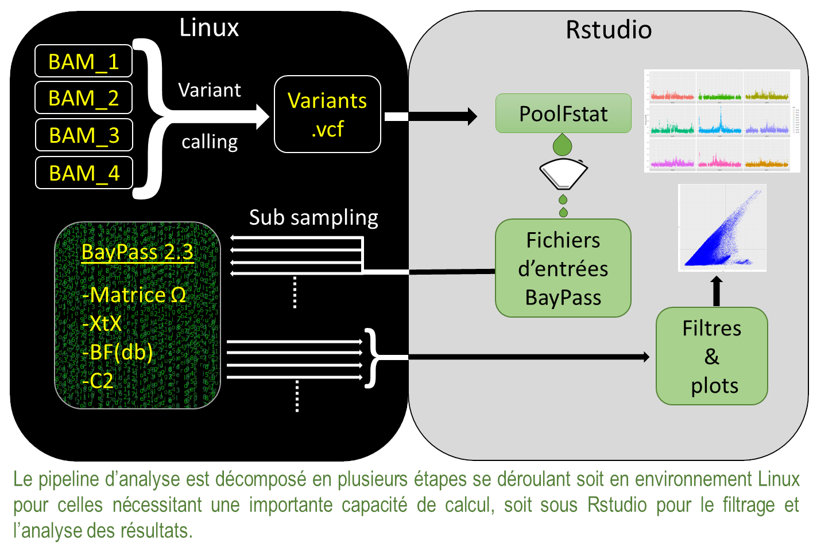

Présentation générale de l’analyse :
La figure 1 est une vision simplifiée des différentes étapes nécessaire à l’analyses de données poolseq. Ces étapes se déroulent soit dans l’environnement Linux du cluster de calcul soit sur un ordinateur local sous Rstudio. La première étape part d’un fichier d’alignement au format « .bam » et consiste à effectuer une recherche de variants (variant calling) pour obtenir un fichier au format « .vcf » de tous les points de mutations ou SNP qui sont autant de marqueurs génétiques à analyser. Ce fichier .vcf sert d’entrée au package « PoolFstat » qui va permettre de générer les fichiers nécessaires au bon fonctionnement de BayPass mais aussi de faire une première analyse des Fst entre populations par exemple. Ces fichiers d’entrées pouvant contenir plusieurs millions de SNP, ils sont découpés en plusieurs dizaines de sous jeux de données afin de réduire les temps de calculs. Une fois que BayPass a analysé tous les sous jeux de données, l’homogénéité des résultats entre eux est analysée sous Rstudio et si tout est bon, les résultats peuvent être regroupés, filtrés et analysés afin de déterminer les marqueurs génétiques et les régions chromosomiques d’intérêts.
